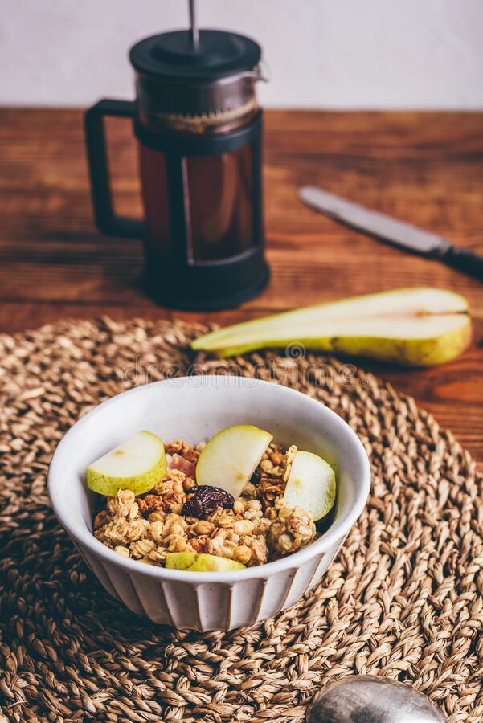

Dieta normocalórica, hipoproteíca e hiposodica, adecuada en
carbohidratos y lípidos.
El requerimiento calórico se calculó en base a 30 kcal/kg de peso
seco que finalmente nos
arroja un total de 1650 kcal totales.
REQUERIMIENTO MACRONUTRIENTES
La proteína se calcula en base a 0.9 gr/kg debido al estadio en el
que se encuentra
la enfermedad renal, se progresa según la evolución de la paciente.
| Nutrimento |
% |
Kcal |
Gramo |
Gr/kg |
| HCO |
60 |
990 |
247.5 |
4.5 |
| Lípidos |
28.2 |
465.3 |
51.7 |
0.95 |
| Proteína |
11.8 |
195.2 |
48.8 |
0.9 |

El requerimiento hídrico se calculará a partir del volumen urinario
en un periodo de 24
horas agregando 500 ml al resultado.
Dieta alta en fibra, alrededor de 20 – 35 gramos de fibra al día.
La paciente se encuentra en predialisis por lo tanto, se recomienda
una ingesta de potasio
en ERC de 1.500-2.000 mg/día de acuerdo con un artículo de abordaje
nutricional en
paciente con insuficiencia renal crónica del año 2017.
Menor a 2,400 mg por el estadio en el que se encuentra y la presencia
de presión arterial
elevada ,según las guías de práctica clínica para paciente con
enfermedad renal crónica
del instituto mexicano del seguro social.
- Suplementación de cetoanálogos de aminoácidos: 1 tableta/5 Kg peso
corporal/día (0.1
g/Kg/día)
- Coenzima q 10 : 4-5 mg/kg/día administrado en 3 dosis
- Omega 3000 mg como dosis terapéutica según una revisión de
investigaciones publicada
en la revista científica 'Journal of the American Heart Association'.